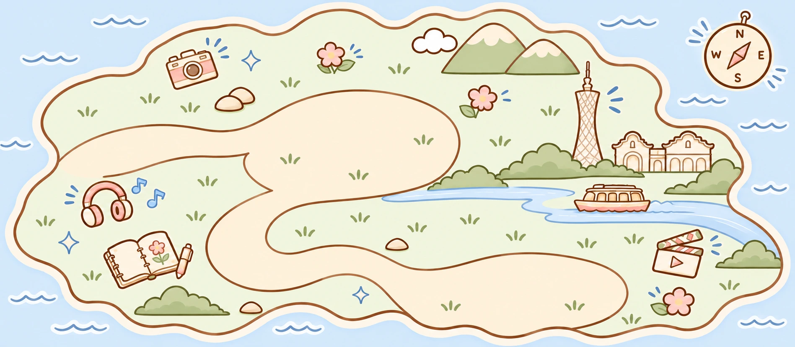

Click the island to walk · Arrow keys or WASDChoose the sign, desk or cottage to explore.
Some island artwork could not load. Please refresh, or use the navigation above to explore.
Walking needs JavaScript. You can still open About, Work and Contact from the illustrated entrances or navigation.